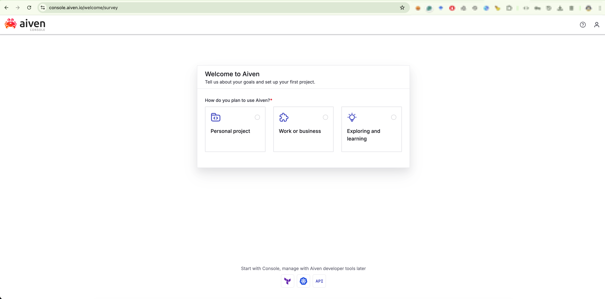
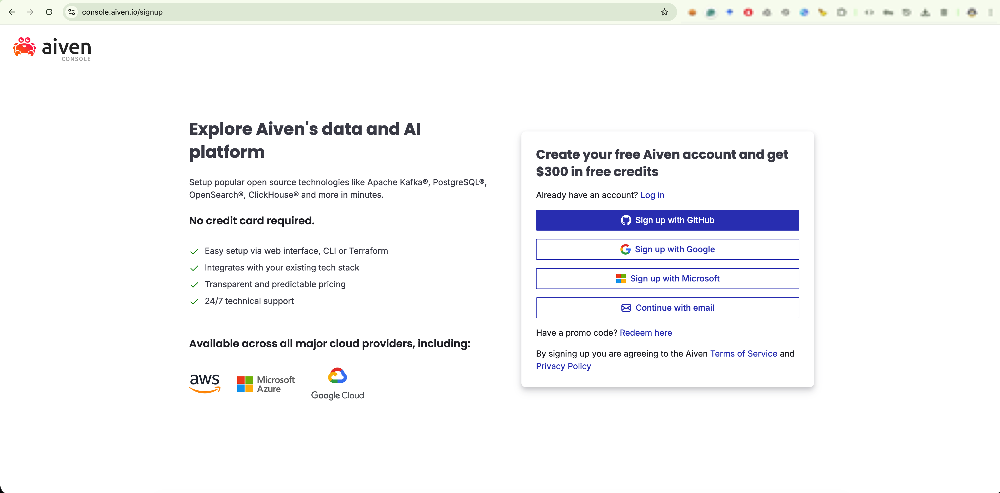
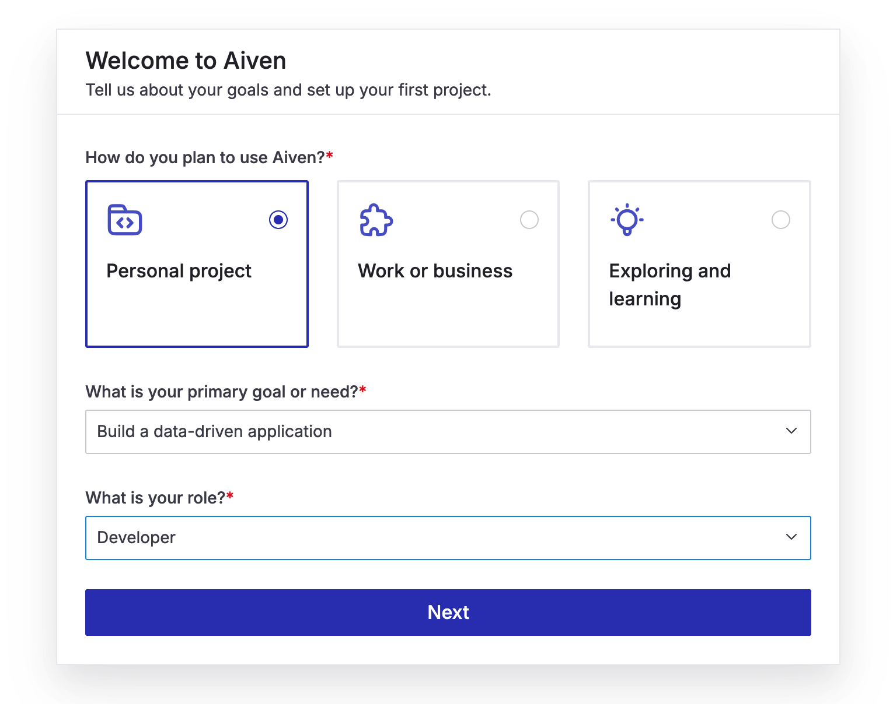
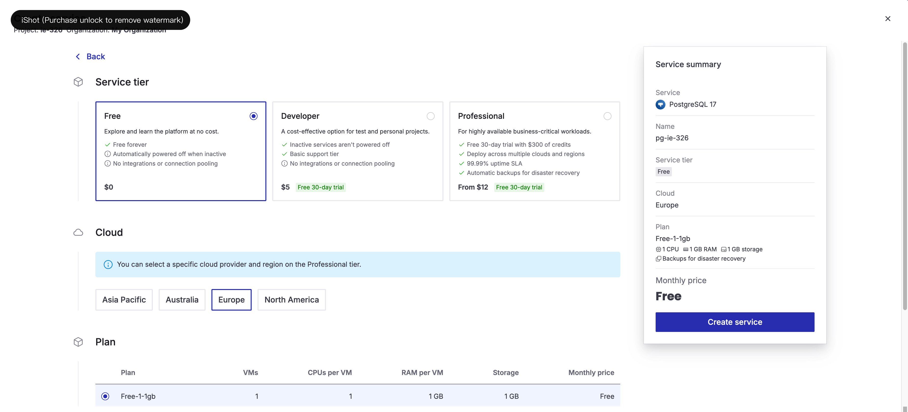
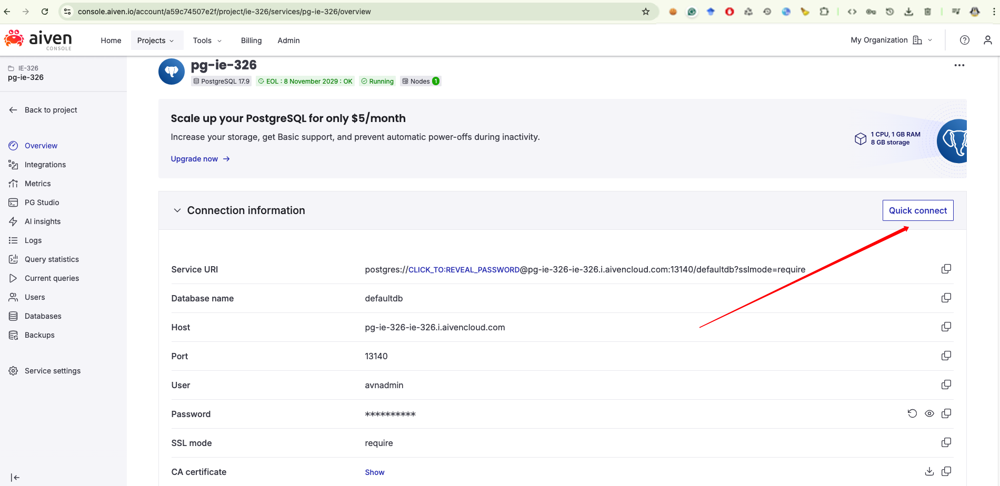
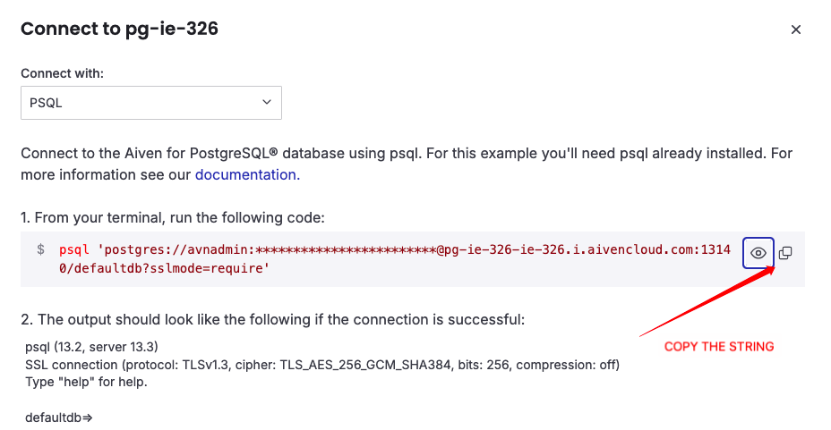

2A

Gazi University • Department of Industrial Engineering
Database Management Systems
Open the Aiven sign up page and create your account.

Move forward until you reach the service selection area.


Make sure the service you choose is PostgreSQL.

After the PostgreSQL service is created, open the connection information area.

Copy the full PostgreSQL connection string exactly as shown and use it in the course SQL Studio.
